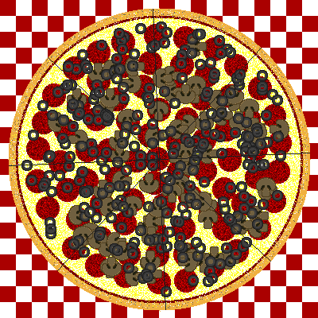

| New! improved! XML-compliant!! These pages will help you design your own TEI-conformant document
type definition (DTD).
The TEI Guidelines define several hundred elements and associated attributes, which can be combined to make many different DTDs, suitable for many different purposes, either simple or complex. With the aid of the Pizza Chef, you can build a DTD that contains just the elements you want, suitable for use with any XML processing system. |
We've tried to make this as easy as possible, but you do need to understand a little about how the TEI DTD is organized. In particular, you need to understand that the TEI scheme is organized into base and additional tagsets (groups of elements), and that each element in a tagset can be suppressed, or redefined. For the full description, see chapter three of the TEI Guidelines; if you want a quick reminder, see an overview of the TEI architecture.
Here are the steps involved in using the PizzaChef:
OK ... now let's get baking!
If you're interested in how this website was built and how it works, you might like to read the following fine Technical Reports :
This version of the TEI Pizza Chef was developed by Lou Burnard, but all the clever stuff backstage is still done using Michael Sperberg-McQueen's carthage. An alternative version, developed by Sebastian Rahtz, is available under the name of maketeidtd. .